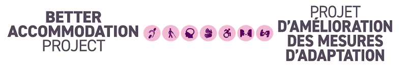

Welcome to the Better Accommodation Project (BAP)

Contents
As Deputy Minister Champion for Federal Employees with Disabilities, I have the privilege of working in support of building a more accessible public service that is grounded in public service values and ethics. The commitment to public service by federal employees with disabilities is powerful and motivating. We benefit from their incredible talents that are applied daily to the benefit of all Canadians.
I am grateful every time an employee with a disability places their trust in me and shares their story. These stories can be difficult to listen to because they involve deeply personal experiences. They also highlight that while the federal public service has made substantial progress on accessibility and disability inclusion, there is more to do.
Since being named Champion in November 2022, the most frequent concern brought to my attention is how we accommodate employees. Many of our colleagues have shared how departmental approaches to accommodations are often complicated, administratively burdensome, intrusive, slow, and emotionally difficult to navigate.
The Better Accommodation Project (BAP)
In September 2024, working with nine partner departments and the Privy Council Office’s Impact Canada Unit, I launched the Better Accommodation Project. BAP is a one-year project designed to drive transformative change in how federal employees with disabilities are accommodated across the public service.
The project advanced a vision of providing best-in-class workplace accommodation that:
- reflect the social model of disability
- are timely, consistent, inclusive, and responsive; and
- enable all federal employees with disabilities to get the supports they need to thrive in their jobs, regardless of where they work.
I am grateful that nine of my colleagues participated in the project. I am also thankful for the expertise of the Privy Council Office’s Impact Canada Unit, who conducted “sludge audits” of our respective workplace accommodation processes. A sludge audit is a way to find and remove unnecessary barriers that make a process harder, slower, costly, or more frustrating than it needs to be.
In addition to these audits, the BAP team engaged with public servants [link to WWH] and with private and not-for-profit organizations. They used this information to develop BAP’s evidence-based, innovative tools to support departments and agencies in delivering best-in-class workplace accommodations. These tools build on past government projects and are based on research, the lived experiences of employees and what we have learned and tested so far. They are designed to help every department act now to improve how they deliver workplace accommodation services. While not perfect, they align with the goals of the Accessible Canada Act and the Public Service Accessibility Strategy.
As the largest employer in Canada, the federal government has a responsibility to lead by example and use our resources wisely. Improving workplace accommodation is not about spending more money but about streamlining our approaches and making our internal processes work better for employees with disabilities. Our research demonstrates that the modest expense of accommodations is far outweighed by the productivity loss associated with our processes and when needed supports are not provided or timely.
I urge every department and agency to leverage and share these resources. Let us move forward together, with purpose and urgency, toward our goal of becoming the most accessible and inclusive public service in the world!
With gratitude,
Tina Namiesniowski
Deputy Minister Champion for Federal Employees with Disabilities
Getting started
Accommodation in the workplace is a collaboration that involves multiple teams. As you go through the package, it is important to note that each toolkit was designed with a specific audience in mind. These tools reference one another at key points, guiding readers to deeper insights or related topics. We recommend beginning with the toolkit that is most relevant to your needs.
Further background on the project, additional research and next steps following BAP can be found in the "Additional information about the project" section below.
Toolkit for organizations
Description
- This toolkit is meant to assist deputy heads with assessing current maturity of the workplace accommodation service delivery model in their department or agency. It provides a roadmap and tools to help organizations implement the key success factors for a best-in-class workplace accommodation service delivery model.
- This toolkit focuses on organizational design. It is intended to drive organizational change in departments and agencies to generate a more efficient and consistent workplace accommodation process and improve the employee experience.
Steps for organizations to implement the BAP toolkit
- Assess your department or agency’s current maturity level by completing the self-assessment tool. This tool measures an organization’s maturity against BAP’s defined key success factors for a best-in-class workplace accommodation service delivery model.
- Improve your service delivery model by using our guidance on:
- How to implement the key success factors;
- How to build a workplace accommodation Centre of Expertise; and
- How to implement the digital workplace accessibility passport.
- Give your Centre of Expertise the resources to support employees and managers with an effective and inclusive
process:
- The workplace accommodation journey for employees with disabilities (process map); and
- Tips for Centres of Expertise to support employees and managers through the workplace accommodation journey.
- Track and improve the results of your service delivery model by using our proposed performance measurement
framework, which includes:
- A logic model;
- Proposed key performance indicators; and
- How to set service standards.
Toolkit for service users
Description
- This toolkit is meant to support employees and managers through the workplace accommodation journey in an effective way.
- The toolkit aims to give employees and managers a good starting point for successful workplace accommodation discussions. It provides tips and tools that can help the user progress through each step of the journey. Its goal is to promote respectful discussions about workplace accommodations and timely implementation of solutions.
Steps for service users to access their BAP toolkit
- Familiarize yourself with the overall journey (journey map link) so you know what to expect, what your role is and how to navigate each step.
- Go to your respective tip sheet, based on your role, and go to the specific phase and step most applicable to
your situation:
- Effective behaviours for successful workplace accommodations
- Checklist for managers
- Checklist for employees
- Effective behaviours for successful workplace accommodations
- Tips for employees to navigate the accommodation journey
- Tips for managers to navigate the accommodation journey
Quick links to BAP toolkits
| Section | Sub-section | Name and link |
|---|---|---|
| Steps for organizations to implement their BAP toolkit | 1. Assess your department or agency’s current maturity level | Maturity Model Self-assessment Questionnaire |
| 2. Build upon the maturity and consolidate your service delivery model | Maturity Model for a Best-in-Class Workplace Accommodation Service Delivery Model
How to Build a Centre of Expertise for Workplace Accommodation for Employees with Disabilities |
|
| 3. Equip your Centre of Expertise to support employees and managers with an effective and inclusive process | The Workplace Accommodation Journey for Employees with Disabilities
Tips to Navigate the Workplace Accommodation Journey for Employees with Disabilities – Centre of Expertise |
|
| 4. Track and improve the results of your service delivery model | Performance Measurement Framework
Logic Model for Best-in-Class Workplace Accommodation Services |
|
| Steps for service users to access their BAP toolkit |
1. Journey Map |
The Workplace Accommodation Journey for Employees with Disabilities |
| 2. Checklist for managers and employees | Effective Behaviours for Successful Workplace Accommodation | |
| 3. Tips for employees | Tips to Navigate the Workplace Accommodation Journey for Employees with Disabilities – Employee | |
| 4. Tips for managers | Tips to Navigate the Workplace Accommodation Journey for Employees with Disabilities – Manager |
Tools and Implementation Partner Prototypes
| Name | Department or Agency |
|---|---|
| Guidance on using SOSA App for Workplace Accommodation Solutions | BAP Team |
| Case Management Tracking Tool | BAP Team |
| Accessibility, Accommodation and Adaptive Computer Technology Inventory | Accessibility, Accommodation and Adaptive Computer Technology (AAACT) |
| Communications Template with Service Provider Information for Managers | Innovation, Science and Economic Development (ISED) |
| Manager’s Guide: Accessing Centralized Funding for Workplace Accommodation | Agriculture and Agri-Food Canda (AAFC) |
| Manager’s Guide: Leading discussions on Workplace Accommodation | Canadian Heritage (PCH) |
| Manager’s Guide: Requesting Medical Information for Workplace Accommodation | Department of Justice Canada |
| Workplace Accommodation Centre of Expertise Intranet Pages
Video showcase of Centre of Expertise Intranet Pages |
Crown-Indigenous Relations and Northern Affairs Canada (CIRNAC) |
| Workplace Accommodation Centre of Expertise Rebranding Exercise | Employment and Social Development Canada (ESDC) and Canadian Heritage (PCH) |
| Workplace Accommodation Language in Letters of Offer | Employment and Social Development Canada (ESDC) |
Additional information about the project:
- BAP Overview
- Infographic - Why invest in better workplace accommodations for employees with disabilities?
- What we heard report
- Better Accommodation Project Sludge Audit Findings Report
- What's Next?